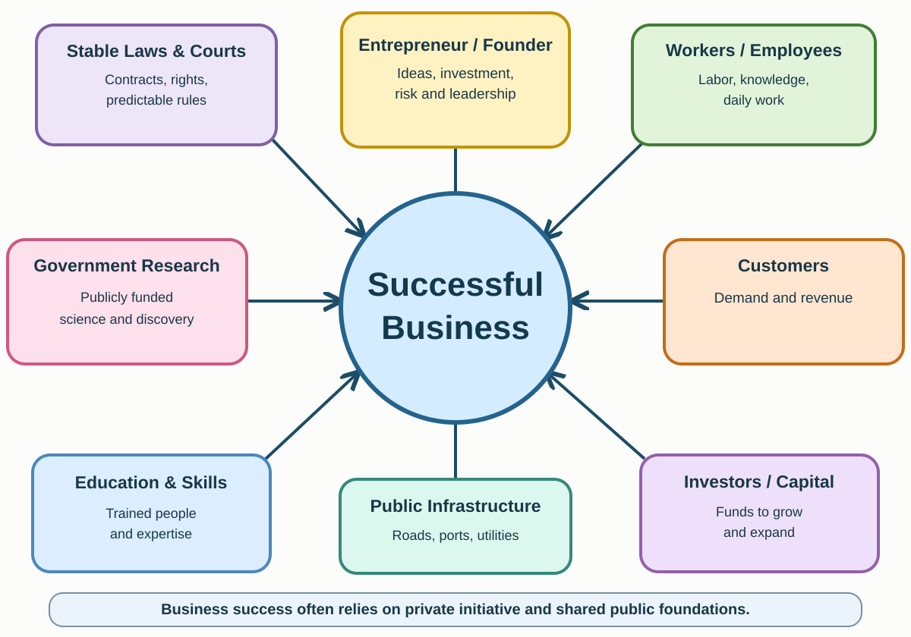

U.S. History · Gilded Age / Progressive Era · Day 8
Who Had Power? Wealth, Reform and Change
How did Americans respond to the new wealth and unequal power of industrial America—and what questions remain today?
Start / Resume Assignment
Use your anonymous alias from your other assignments (two letters and two digits minimum). Do not enter your real name or school ID.
Enter an alias to check for saved work.
Alias: Completion grade: 0%Saved on this device
Cloud verification is shown only after the server confirms the exact saved snapshot. If cloud is unavailable, this device keeps a local copy. Submit a PDF to Google Classroom.
Thinking Is Fun! · MOVE
Is extreme wealth fair?
MOVE activity: Imagine a founder builds a company employing 100,000 people and serving millions of customers. The founder becomes worth $100 billion. Many workers earn reasonable salaries; some struggle to pay rent. The founder took risks, and employees chose to work there.
Before opening the HTML questions, move to YES, NO, or IT DEPENDS. Share your gut reaction aloud. Return to your seat for the next part.
Now consider competing arguments
Arguments defending great wealth
Large rewards can motivate new ideas, investment and entrepreneurshipStarting and running a business while taking financial risks.. Buyers choose products, workers agree to jobs, and businesses can create jobs and raise living standards—even when wealth is unequal.
Arguments questioning great wealth
Business success also comes from employees, public infrastructure and shared knowledge. Workers may have limited alternatives. Concentrated wealth can create unequal opportunities and greater access to political decision-makers.
One argument that challenges my view is ___ because ___.Although I first thought ___, the argument about ___ makes me reconsider ___.
I now think ___ because ___.My view [stayed the same/changed] because I weigh ___ more heavily than ___.
Then & now
Why does inequality matter?
Net worthValue of what a person owns minus what the person owes. Not the amount of cash they have. is not the same as annual income. Comparing historic fortunes with today's requires estimates. The historical figures below use an economic-share comparison (what a comparable share of the U.S. economy would represent now), not simple inflation. These values are rough estimates, not precise measurements.
Gilded Age figures · estimated equivalent
Rockefeller
$516B
Carnegie
$475B
Vanderbilt
$285B
Gould
$98B
Modern business leaders · illustrative Nov. 2026
Musk
~$900B
Bezos
~$387B
Page
~$243B
Zuckerberg
~$220B
Fortunes are estimates; rankings and stock-market valuations change rapidly. Historical figures use a different estimation method from today's market valuations and cannot be compared as exact equivalents. Sources: historical fortune comparisons; Forbes real-time billionaires.
Income concentration: who gets what share?
Economists estimate that the richest 1% received a high share of U.S. income around the early 1900s, a smaller share in the middle of the twentieth century, and a larger share again in recent decades. This is a long-term pattern, not a direct measure of Progressive Era reforms. Other events, including the New Deal and World War II, also shaped the trend.
c. 1915
~20%
c. 1970
~11%
c. 2024
~21%
Approximate, rounded illustrative values using historical before-tax income-share estimates; consult Our World in Data / World Inequality Database for methodology and exact time series.
So what? Unequal incomes can coexist with improved living standards. But large inequalities can affect whether people can afford necessities, access opportunities, or influence public decisions. Different people also disagree about how much inequality is fair.
It [does/does not] matter to me because ___.Even if everyone gains, I would also want to know ___ before judging whether ___.
Primary-source comparison · 2012
Who makes a successful business possible?
During the 2012 presidential campaign, Barack Obama and Mitt Romney debated how businesses succeed and what role the public plays. Obama's remarks were widely shortened into a controversial sound bite. Read the surrounding argument rather than interpreting a single phrase by itself.
Select words in either passage, then choose:
Barack Obama
President · Roanoke, Virginia · July 13, 2012
Context: Obama was arguing that individual achievement and public investment work together. The passage below is a contextual summary, not a word-for-word transcript, with brief original phrases identified separately.
Short original phrases: “you didn't get there on your own”; “individual initiative”; “we do things together.”
Republican presidential candidate · Costa Mesa, California · July 23, 2012
Context: Romney criticized Obama's remarks at a roundtable with business leaders. This contextual summary captures his argument about founders' hard work and government policies, not a verbatim transcript.
Short original phrases: “how hard it is to start a business”; campaign slogan: “We did build it!”
Source-reading reminder: The longer readable passages are identified as summaries so they cannot be mistaken for exact quotations. To read the primary sources verbatim, follow each source link.
The contributions behind success

Both speakers recognize ___, but they differ about ___.While one emphasizes ___, the other stresses ___; the graphic adds ___.
Historical bridge · 1890s
Farmers challenge concentrated power
Many farmers struggled with debt, fluctuating crop prices and railroad freight rates. Farmer-led organizations and the Populist PartyA political movement that argued ordinary people, especially farmers, should have more influence over the economy and government. called for changes including stronger railroad oversight and a graduated income tax. Workers and farmers had different jobs but often worried about powerful organizations influencing prices and decisions.
Discuss: What did farmers and industrial workers have in common? Which powerful institutions did each challenge?
Click each reform. Notice the problem → the response → how well it worked. You do not need to memorize every law. Some laws existed before the main Progressive Era; others passed later. Several had limited effects at first.
I chose ___ and ___ because they changed who could ___.Compared with ___, the reform ___ shifted power more because ___, although ___.
Culminating investigation
Who had power in 1870 and 1910?
For each group, read both three-sentence contexts and rate its overall ability to influence major decisions from 1 (very little) to 10 (very great). These are your evidence-based interpretations, not a test with a single correct number. Political and economic power may differ. A rating is only recorded after you move the slider.
I think ___ gained the most because in 1870 ___ but by 1910 ___.Although ___ still faced limits, the shift from ___ to ___ suggests ___.
The group I chose is ___ because the contexts show ___.Despite ___, this group's ability to influence decisions was restricted by ___.
Unit conclusion
What changed—and what didn't?
The Gilded Age created remarkable new wealth and technology, but also conflicts over who benefited, who paid the costs and who controlled decisions. Reformers challenged some arrangements; other inequalities continued.
Industrialization changed America by ___. People responded by ___, which ___.Although ___ addressed ___, the evidence from ___ and ___ suggests reforms were [effective/limited/mixed] because ___.
Before you leave: Check your completion percentage, press Save now, and export your assignment PDF. If the PDF library is unavailable, use Emergency PDF.